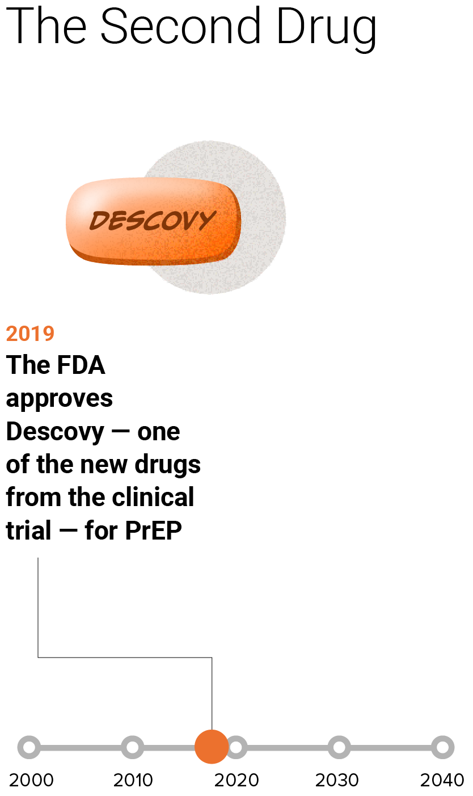

Show Product Hop
Show Next Step
Show Next Step
Show Next Step
Show Next Step

Show Next Step
Show Next Step
Show Next Step
![Infographic shows a gray timeline from 2000 to 2035 with dots marking every five years. This first step on the timeline is headlined The Impact, and has a text that reads: Gilead moved nearly half of its PrEP patients from Truvada, to its newer drug, Descovy, by delaying the timing for the new drug's entrance into the market. On the timeline, a blue Truvada pill, is atop a blue arch from 2012, when the FDA approved it to be used to treat PrEP and 2020 when generic PrEP medications first came out. An orange Descovy pill, is atop an orange arch from 2019, when the FDA approved it to be used to treat PrEP, and 2031, when its patent might run out.](new-hop-01.a30087ab.png)
![Infographic shows a gray timeline from 2000 to 2035 with dots marking every five years. This first step on the timeline is headlined The Impact, and has a text that reads: Gilead moved nearly half of its PrEP patients from Truvada, to its newer drug, Descovy, by delaying the timing for the new drug's entrance into the market. On the timeline, a blue Truvada pill, is atop a blue arch from 2012, when the FDA approved it to be used to treat PrEP and 2020 when generic PrEP medications first came out. An orange Descovy pill, is atop an orange arch from 2019, when the FDA approved it to be used to treat PrEP, and 2031, when its patent might run out.](hop-mobile-01.67c1c8e7.png)
![This step of the timeline has the headline: The Second Drug. The timeline has the following items plotted with blue dots between 2000 and 2035. 2019, The FDA approves Descovy - one of the new drugs from the clinical trial - for PrEP. 2031, Generic versions of Descovy could become available - but ongoing lawsuits could impact the date. An orange arch illustrations the connection between 2019 and 2031 with light orange shading to represent the uncertainty over the 2031 date. There is an illustration of an orange Descovy pill.](new-hop-07.5bb14c6f.png)
![This step of the timeline has the headline: The Second Drug. The timeline has the following items plotted with blue dots between 2000 and 2035. 2019, The FDA approves Descovy - one of the new drugs from the clinical trial - for PrEP. 2031, Generic versions of Descovy could become available - but ongoing lawsuits could impact the date. An orange arch illustrations the connection between 2019 and 2031 with light orange shading to represent the uncertainty over the 2031 date. There is an illustration of an orange Descovy pill.](hop-mobile-07.1367374a.png)
![This step of the timeline has the headline: The Impact. It has text that reads: The product hop extended the time period where Gilead's top drug for PrEP had little competition - the company used the delayed study to encourage use of the newer drug. On the timeline, a blue Truvada pill, is atop a blue arch from 2012, when the FDA approved it to be used to treat PrEP and 2020 when generic PrEP medications first came out. An orange Descovy pill, is atop an orange arch from 2019, when the FDA approved it to be used to treat PrEP, and 2031, when its patent might run out.](new-hop-08.6a5ac9ae.png)
![This step of the timeline has the headline: The Impact. It has text that reads: The product hop extended the time period where Gilead's top drug for PrEP had little competition - the company used the delayed study to encourage use of the newer drug. On the timeline, a blue Truvada pill, is atop a blue arch from 2012, when the FDA approved it to be used to treat PrEP and 2020 when generic PrEP medications first came out. An orange Descovy pill, is atop an orange arch from 2019, when the FDA approved it to be used to treat PrEP, and 2031, when its patent might run out.](hop-mobile-08.10bcd381.png)